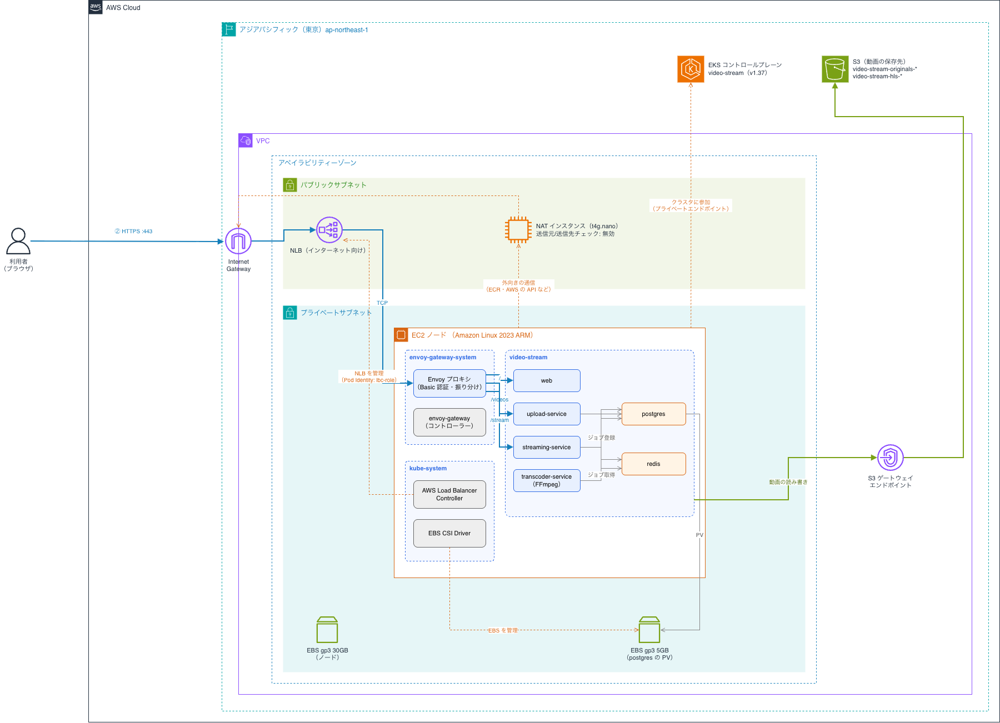

2023.05 — 現在
暗号資産向け会計ソフトの開発・保守
暗号資産を取り扱う事業者や個人向けの会計ソフトの開発・保守を担当。バックエンドが中心。
- 言語
- PHP / HTML / CSS / JavaScript
- フレームワーク
- Laravel / Vue.js
- DB
- MySQL
- インフラ
- Docker / AWS（EC2 / ECS）
- OS
- macOS
濃色は実務で使用している技術です。
2023.05 — 現在
暗号資産を取り扱う事業者や個人向けの会計ソフトの開発・保守を担当。バックエンドが中心。
個人開発
Go + Kubernetes + HLS による動画配信プラットフォーム
動画をアップロードすると、バックグラウンドで FFmpeg により HLS 形式へ変換し、ブラウザでストリーミング再生できるサービスです。 ローカルとAWS EKS の両方で動かせるように設計しています。
POST /videos
原本をオブジェクトストレージに保存し、メタデータを PostgreSQL に登録。変換ジョブを Redis キューに投入して即座にレスポンス。
Redis BLPOP
キューからジョブを取り出し、FFmpeg で HLS に変換。
GET /stream
.m3u8 / .ts を配信。ブラウザ側は hls.js で再生。
